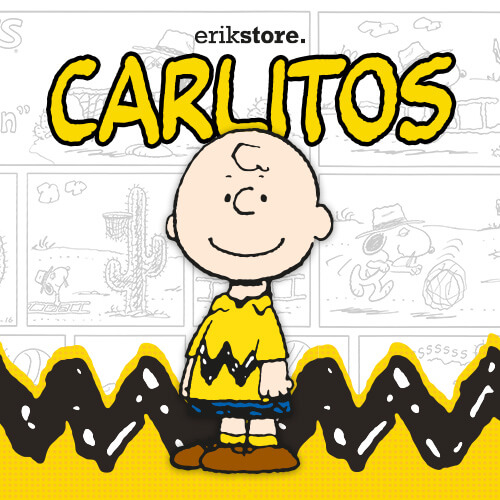
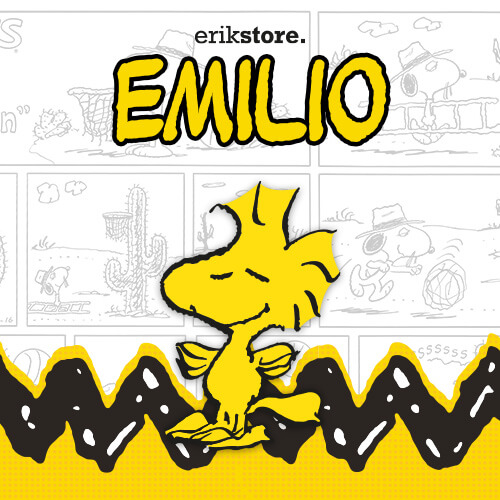
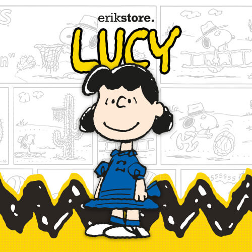
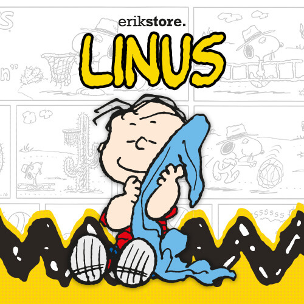
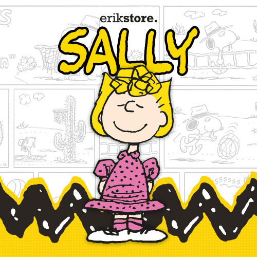
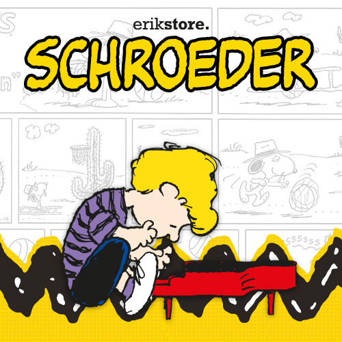
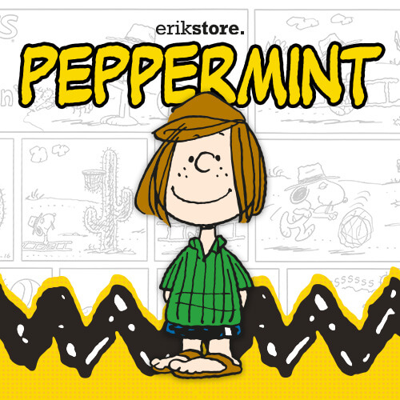
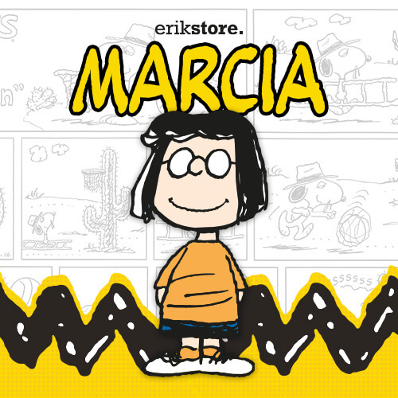
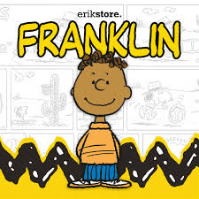

| Personaje | Relación con Snoopy | Descripción |
|---|---|---|
| Charlie Brown | Dueño | El mejor amigo y dueño de Snoopy. |
| Woodstock | Mejor amigo | Pequeño pájaro amarillo inseparable de Snoopy. |
| Lucy | Amiga | Conocida por su fuerte personalidad. |
| Linus | Amigo | Siempre lleva su famosa manta azul. |
| Sally Brown | Amiga | Hermana menor de Charlie Brown. |
| Schroeder | Amigo | Apasionado por la música clásica. |
| Peppermint Patty | Amiga | Gran deportista y líder natural. |
| Marcie | Amiga | Mejor amiga de Peppermint Patty. |
| Franklin | Amigo | Uno de los miembros más queridos del grupo. |

Charlie Brown es el protagonista principal de Peanuts. Aunque suele tener mala suerte, nunca deja de intentarlo y siempre demuestra perseverancia.

Woodstock es el mejor amigo de Snoopy. A pesar de ser muy pequeño, participa en muchas aventuras junto a él y suele comunicarse mediante sonidos especiales.

Lucy es una niña inteligente y muy segura de sí misma. Es famosa por su puesto de consejos psicológicos y por molestar a Charlie Brown.

Linus es uno de los personajes más reflexivos de la serie. Siempre lleva consigo una manta que le brinda seguridad.

Sally es la hermana menor de Charlie Brown. Es divertida, imaginativa y aporta muchas situaciones cómicas a la historia.

Schroeder es un talentoso pianista que admira profundamente al compositor Ludwig van Beethoven.

Peppermint Patty destaca por su habilidad para los deportes y por su personalidad segura y amigable.

Marcie es una estudiante muy inteligente y la mejor amiga de Peppermint Patty.

Franklin es amable, responsable y uno de los amigos más cercanos de Charlie Brown.